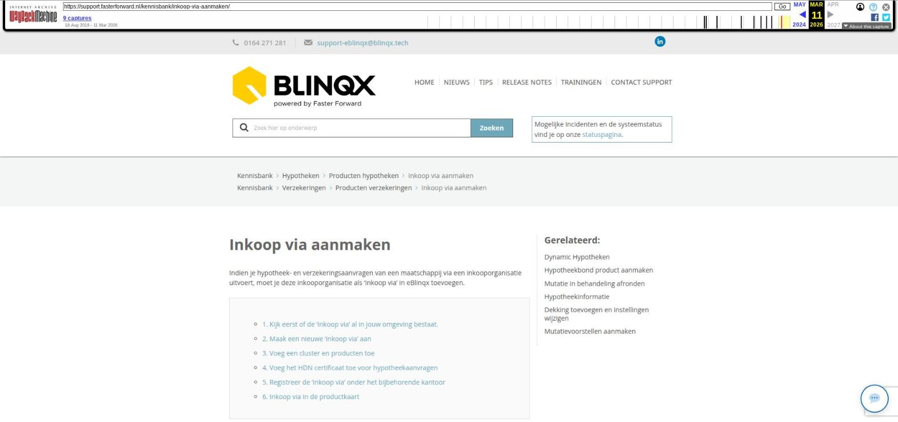

Inkoop via aanmaken

Tekstinhoud
Inkoop via aanmaken
Indien je hypotheek- en verzekeringsaanvragen van een maatschappij via een inkooporganisatie uitvoert, moet je deze inkooporganisatie als 'inkoop via' in eBlinqx toevoegen.
1. Kijk eerst of de 'inkoop via' al in jouw omgeving bestaat.
2. Maak een nieuwe 'inkoop via' aan
3. Voeg een cluster en producten toe
4. Voeg het HDN certificaat toe voor hypotheekaanvragen
5. Registreer de 'inkoop via' onder het bijbehorende kantoor
6. Inkoop via in de productkaart
Volg onderstaande stappen om een nieuwe 'inkoop via'/servicegebruiker (cluster) aan te maken:
1. Kijk eerst of de 'inkoop via' al in jouw omgeving bestaat.
Ga hiervoor naar Beheer – Organisatie & personen – zoek bij organisaties op naam van de 'inkoop via', bijvoorbeeld MO.Servicing. Indien je hier geen resultaten krijgt dan dien je de inkoop via nog aan te maken. Volg hiervoor stappen 2 t/m 5. Mocht je wel resultaat krijgen dan kan je controleren of alle instellingen correct staan en of de inkoop via gekoppeld is aan jouw kantoor. Volg hiervoor de stappen 3 t/m 6.
2. Maak een nieuwe 'inkoop via' aan
Ga hiervoor naar 'Beheer – Organisatie & personen' en klik op de + knop. Vul de naam van de organisatie in en klik op opslaan. De organisatie is nu aangemaakt. Klik op de naam van de organisatie om deze verder in te richten.
3. Voeg een cluster en producten toe
Ga hiervoor naar het tabblad 'detail', vink hier 'cluster' aan en klik op opslaan. Daarna verschijnt er een extra tabblad 'inkoop via'. Klik hierop en vink alle producten aan waarbij je de 'inkoop via' wilt kunnen selecteren. Sla deze wijziging vervolgens ook op.
4. Voeg het HDN certificaat toe voor hypotheekaanvragen
Gebruik je de 'inkoop via' voor jouw hypotheekaanvragen? Vul dan het HDN certificaatnummer van de 'inkoop via' in onder het tabblad 'Inventarisatie'. Klik hiervoor bij 'codes' op + en selecteer vervolgens bij
type: HDN certificaatnummer
code: het HDN certificaatnummer van de organisatie in. Klik hier voor een overzicht van alle HDN certificaatnummers.
Afgegeven datum: een willekeurige datum in het verleden
5. Registreer de 'inkoop via' onder het bijbehorende kantoor
De 'inkoop via' (cluster) dient vervolgens geregistreerd te worden onder het kantoor waar deze op van toepassing is. Dit kantoor staat in het dossierheader van het dossier waarin het product staat. In de meeste gevallen is dit jouw eigen kantoor. Indien er meerdere deelnemers/kantoren zijn, moet onder iedere kantoor de inkoop via toegevoegd worden.
Ga hiervoor naar Beheer – Organisaties en personen – Organisaties en zoek het kantoor waar de inkoop via onder moet komen te staan.
Onder het kopje 'Relatie organisaties' voeg je de 'inkoop via' toe. Dit middels het groene plusje.
Kies hier voor relatie cluster en vul de naam van het cluster in in het veld 'Naam'. Druk op Enter. Klik vervolgens op het resultatenblok, zodat je de organisatie niet dubbel aanmaakt.
Onderaan het pop-upscherm verschijnt de aangemaakte inkoop via. Klik hier op en sla op.
6. Inkoop via in de productkaart
Bij het verwerken van het HDN bericht voor de hypotheekaanvraag vul je de 'inkoop via' in. Deze zie je terug in de productkaart links onder de balk Hypotheek.
Let op: het is niet mogelijk om een inkoop via specifiek aan een maatschappij te koppelen. Je zal een keuze moeten maken, tenzij er maar één inkoop via (voor dit producttype) is. Dan wordt deze automatisch gevuld.
Laatste update: 15 oktober 2025
Was deze informatie nuttig?
Ja Nee